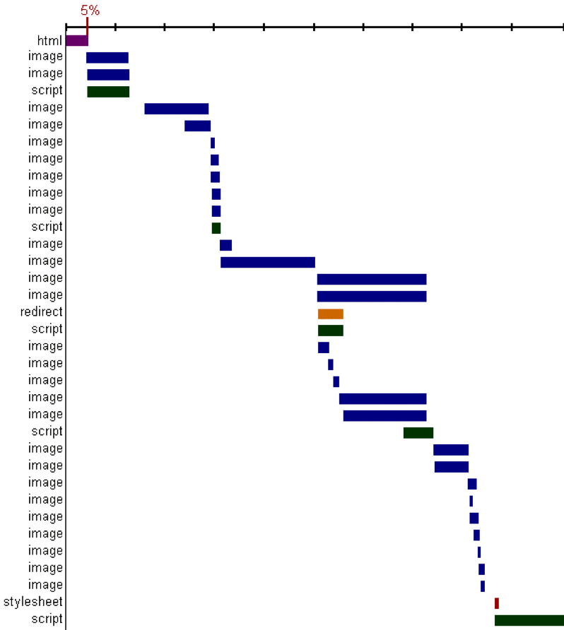
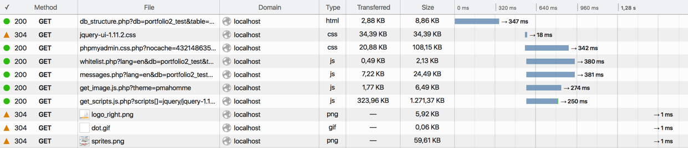
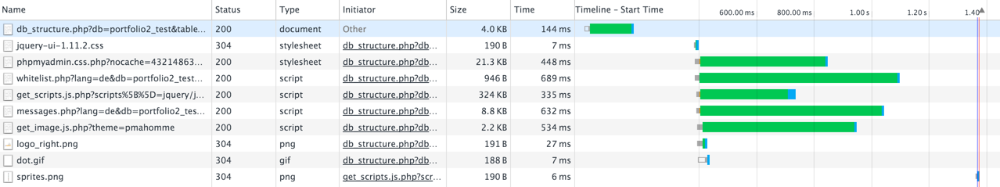
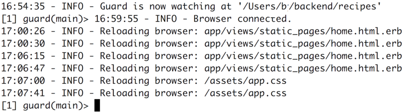

The Asset Pipeline
A web site consist of many more files than just the HTML documents we have been generating up to now: css files, javascript files, image files, font files, ...
The asset pipeline is rails' way of preparing theses files for publication using the current state of knowledge regarding web performance.
By referring to this guide, you will be able to:
- keep your assets in the right place
- have all your assets compiled and minified for production
Fork the example app 'recipes' and try out what you learn here.
1 Web Performance
What do we mean by 'web performance'? From the viewpoint of one user, the crucial value is the time it takes from requesting a page (by clicking a link or button, or typing in an URL) to having the page displayed and interactive in your browser. We will call this the 'response time'.
From the publishers point of view it might also encompass the question of how many uses you can serve (with acceptable response time) on a given server. If you look at the question of how to server more users in case of more demand you enter the realm of 'scalability'. This is a more advanced question that goes beyond the scope of this guide.
1.1 Myths About Performance
If you have never studied this subject you might still have
an intuition about where performance problems come from.
Many beginners are fascinated by details of their programming
language like: will using more variables make my program slower?
or is string concatenation faster than string interpolation?.
These 'micro optimizations' are hardly ever necssary with modern programming languages and computers. Using rails, postgres and a modern hosting service you will have no trouble serving hundreds of users a day and achieving adequate performance for all of them.
Trying to 'optimize' you code if there is no problem, or if you don't know where the problem is, will make your code worse, not better.
Donald Knuth stated this quite forcefully:
"The real problem is that programmers have spent far too much time worrying about efficiency in the wrong places and at the wrong times; premature optimization is the root of all evil" -- Donald Knuth
Only after you have measured the performance factors that are relevant to your project, and only after you have found out which part of the system is causing theses factors to go over the threshold of acceptable values, only then can you truly start to 'optimize'.
1.2 Measuring Web Performance
The "exceptional performance" group at yahoo published the browser addon
yslow in 2007. It measures performance and displays the timing
of the different HTTP connections as a "waterfall graph":

(Image from Steve Souders talk at Web 2.0 Expo in April 2008)
Each bar is one resource being retrieved via HTTP, the x-axis is a common timeline for all. The most striking result you can read from this graph: the backend is only responsible for 5% of the time in this example! 95% of time are spent loading and parsing javascript and css files and loading and displaying images!
This graph was later integrated into the built in developer tools of several browsers, and into the online tool webpagetest.
Firefox

Chrome

1.3 Rules...
Yahoo first published 14 rules for web performance in 2007, based on the measurements back then:
- Make Less HTTP Requests
- Use a Content Delivery Network
- Avoid empty src or href
- Add an Expires or a Cache-Control Header
- Gzip Components
- Put StyleSheets at the Top
- Put Scripts at the Bottom
- Avoid CSS Expressions...
- Make JavaScript and CSS External
- Reduce DNS Lookups
- Minify JavaScript and CSS
- Avoid Redirects
- Remove Duplicate Scripts
Even with changing browsers and protocols some of these are still very valid today. But as a web developer you should always keep an eye on the changing landscape of web performance! These rules and their priority will change!
2 How Rails helps with Performance
To comply with rule 1 "make fewer HTTP requests" there now exist a lot of tools. The Rails asset pipeline was introduced in Rails 3.1 in the year 2011.
I lets you use all theses tools automatically:
- compile to JavaScript (e.g. coffeescript, typescript, babel)
- compile to CSS (e.g. LESS, SASS)
- Minify and combine several JavaScript files into one
- Minify and combine several CSS files into one
- Optimize images
- Create several versions of pixel images
- Create CSS Sprites
- Set Expires Header for static assets

There are two main folders:
- you put source files in
app/assets/* - files for publishing are created in
public/assets/*
The second folder will be served by web server directly, without going through the rails stack
2.1 Rails Environments
The Asset Pipeline works differently in different Rails Environments. There are three environments that exist by default:
-
development- this is the environment you have been working in until now,
- it is optimized for debugging, shows error messages and the error console.
-
testing- this is used for running the automatic tests.
-
production- this is how the finished app will run after it is published,
- it is optimized for speed and stability.
How each envirnoments behaves is configured in files in config/environments/*.rb.
The development environment is used by default on your machine. If you deploy to heroku or to another hosting server, production will be used there.
2.2 Rails Environments and the Asset Pipeline
In development the asset pipeline will not write files to public/assets. Instead
these files will be created on the fly, and not be conactenated. The two lines
in your Layout:
# app/views/layouts/application.html.erb <%= stylesheet_link_tag "application", media: "all", "data-turbolinks-track" => true %> <%= javascript_include_tag "application", "data-turbolinks-track" => true %>
Will each result in a number of links. Here an example from a real project:
<link rel="stylesheet" href="/asset-files/search-a01b0css?body=1" /> <link rel="stylesheet" href="/asset-files/slider-974d5css?body=1" /> <link rel="stylesheet" href="/asset-files/static-7fe63css?body=1" /> <link rel="stylesheet" href="/asset-files/token-input-f5febcss?body=1" /> <link rel="stylesheet" href="/asset-files/wizzard-9a065css?body=1" /> <script src="/asset-files/jquery-4075ejs?body=1"></script> <script src="/asset-files/jquery_ujs-f9f4ajs?body=1"></script> <script src="/asset-files/portfolio/portfolio-78775js?body=1"></script> <script src="/asset-files/swfobject-40913js?body=1"></script> <script src="/asset-files/jquery-uploadify-702eajs?body=1"></script> <script src="/asset-files/application-d7727js?body=1"></script> <script src="/asset-files/can-custom-c11b4js?body=1"></script> <script src="/asset-files/easySlider-6386djs?body=1"></script>
When you deploy to production, you deployment process will run rake assets:precompile,
which generates the files in public/assets, including public/assets/manifest-md5hash.json.
If you look at the generated HTML code on the production server,
you will only find two links (plus some code to handle IE 8): in production
the many css files have been concatenated into one application*.css, and
all JavaScript files have bin concatenated int one application*.js:
<link href="/assets/application-dee0187.css" media="screen" rel="stylesheet" /> <!--[if lte IE 8]> <link href="/assets/application-ie-d369224.css" rel="stylesheet" /> <![endif]--> <script src="/assets/application-c51a73.js" type="text/javascript"></script>
You can also try out the production environment on your own machine:
- start the web server:
rails server -e production - rails console:
rails console production - other rails commands: add
RAILS_ENV=productionat the beginning or the end of the command.
2.3 Fingerprinting for better Expiry
The filenames mentioned in the last chapter all contain a part that seems random:
- you named the file
slider.css - but it shows up as
slider-974d585dcb6f5aec673164664a4e49d5.css
Where do the extra characters come from and what do they mean?
These extra characters are the "fingerprint". It is computed from the full content of the file. If only one byte changes in the file, the fingerprint will be different.
This enables a neat trick with the expiry of the file: You can set the expiry time to infinite, every browser can save the file forever and never try to reload it. If the contents of the file change, a new file with a new fingerprint in the name will be generated, and the HTML-page will link to that file.
This way we avoid one the the two hard problems in computer science: cache invalidation.
3 Live Reloading
When you are working on the frontend of your app, fiddling around in views and stylsheets, it may be helpful to immediatly see the changes you make reflected in the browser.
To achive this in Rails you can use guard. Add three gems to the development-section of your Gemfile:
group :development do gem 'guard' gem 'guard-livereload', '~> 2.5', require: false gem 'rack-livereload' end
We are using two separate components here:
-
guard-livereloaddoes the actual file-watching, and runs a separate webserver on port 35729 that sends out messages when a file changes, -
rack-livereloadadds some javascript to every webpage in your app. This javascript will connect to port 35729, listen for messages and reload the page when a message arrives.
To configure guard run:
bundle exec guard init livereload
This will create a Guardfile in your main directory.
Now you can start bundle exec guard in a separate terminal window.
To configure rack-livereload add the following to config/environments/development.rb inside the Rails.application.configure block:
config.middleware.insert_after Rack::Head, Rack::LiveReload
Now stop and start your webserver, reload your app in the browser, and change a stylesheet or view to see it in action.
The window with guard running needs to stay open, it will look like this:

4 Further Reading
- Souders(2007): High Performance Web Sites. O'Reilly. ISBN-13: 978-0596529307.
- Souders(2009): Even Faster Web Sites. O'Reilly. ISBN-13: 978-0596522308.
- The Web Performance (Advent) Calendar new every year